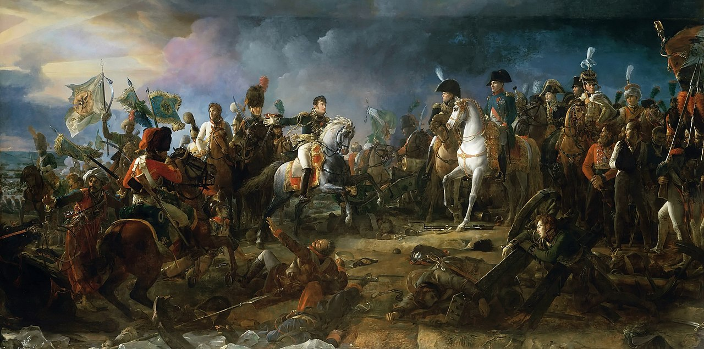
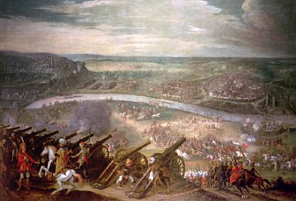
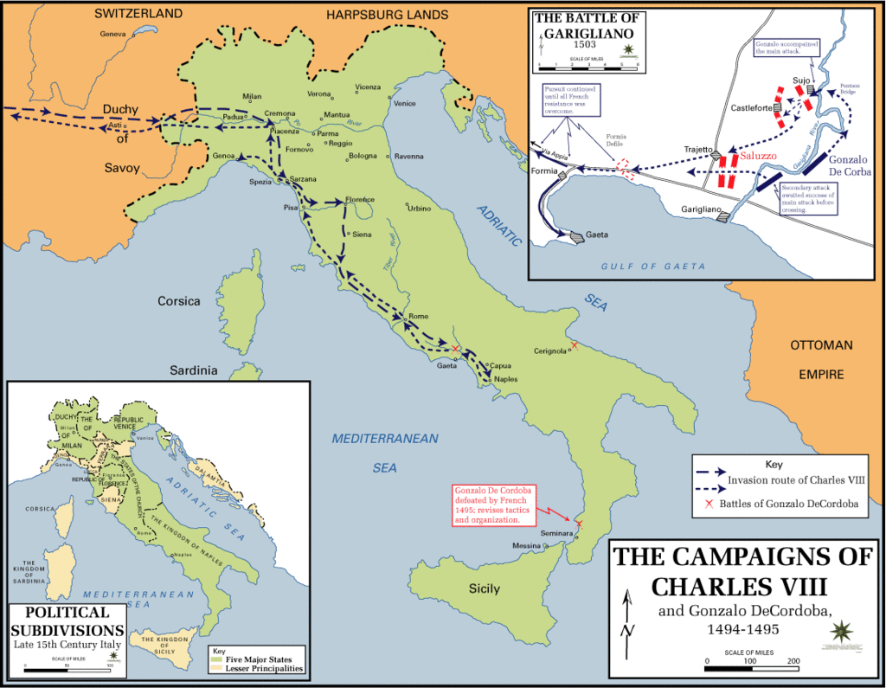
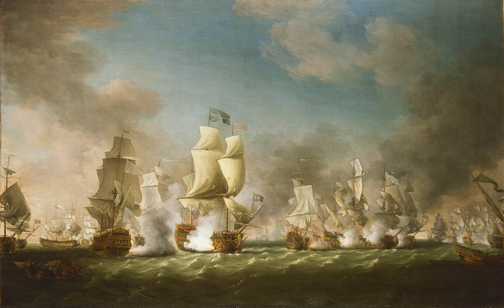

ВІЙНЫ З УЧАСТЮ
СВЯЩЕНЇ РИМСЬКОЇ ІМПЕРІЇ
Війна третьої коаліції
Війна Третьої коаліції (також відома як російсько-австро-французька війна 1805) — війна між Францією, Іспанією, Баварією та Італією, з одного боку і Третьою антифранцузькою коаліцією, до якої входили Австрійська імперія, Росія, Великобританія, Швеція та Неаполітанське королівство з іншої.

Франсуа Жерар. Битва під Аустерліцем (1810).
Австро-турецька війна (1529—1533)
Австро-турецька війна 1529—1533 — перша у тривалому ряду воєн між Австрією та Османською імперією.

Питер Снайерс. Облога Відня в 1529 році.
Перша італійська війна
Перша італійська війна, також іноді звана Італійська війна 1494 року або Італійська війна Карла VIII, стала початком Італійських війн. Війна протиставила Францію, якій на початкових етапах допомагав Мілан, Священній Римській імперії, Іспанії та союзу італійських держав, очолюваному папою Олександром VI.

Похід Карла VIII в Італію.
Війна четверного альянсу
Війна четверного союзу 1718—1720 років (також Війна за французьку спадщину) — продовження Війни за іспанську спадщину, під час якої реваншистські настрої іспанського короля Філіпа Бурбона наштовхнулися на опір четверного союзу Франції, Великобританії, Сполучених провинцій та Священої Римської Імперії, котрих, після вагань, підтримала Савойська династія.

Битва біля миса Пассаро.